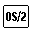

<HTML>
<HEAD>
<TITLE>API Functions</TITLE>
</HEAD>
<BODY>
<H1>API Functions</H1><!-- entering slot 115 --><!-- Unable to decode bitmap format -->
<P>
The following built-in REXX functions can be used in a REXX program to register,
drop, or query external function packages and to create and manipulate external
data queues.
<P>
<B>RXFUNCADD</B>
<PRE> 훀XFUNCADD(name,module,procedure)컴컴컴컴
</PRE>

<P>
RXFUNCADD registers the function<I> name</I>, making it available to REXX
procedures. A zero return value signifies successful registration.
<P>
<B>RXFUNCDROP</B>
<PRE> 훀XFUNCDROP(name)컴컴컴컴컴컴컴컴컴컴컴컴
</PRE>

<P>
RXFUNCDROP removes (deregisters) the function<I> name</I> from the list
of available functions. A zero return value signifies successful removal.

<P>
<B>RXFUNCQUERY</B>
<PRE> 훀XFUNCQUERY(name)컴컴컴컴컴컴컴컴컴컴컴
</PRE>

<P>
RXFUNCQUERY queries the list of available functions for a registration of
the<I> name</I> function. The function returns a value of 0 if the function
is registered, and a value of 1 if it is not.
<P>
<B>RXQUEUE</B>
<PRE> 컴RXQUEUE(컫컴"Get"컴컴컴컴컴컴컴컴컴컫)컴컴
              쳐"Set"컴컴컴newqueuename캑
              쳐"Delete"컴훢ueuename컴컴
              읕"Create"컫컴컴컴컴컴컴컴
                          읕,queuename컴켸
</PRE>

<P>
RXQUEUE is used in a REXX program to create and delete external data queues
and to set and query their names. 

<P><HR>

<A HREF="107_L2_ADDRESS.html">[Back: ADDRESS]</A> <BR>
<A HREF="109_L2_ARG.html">[Next: ARG]</A> 
</BODY>
</HTML>
